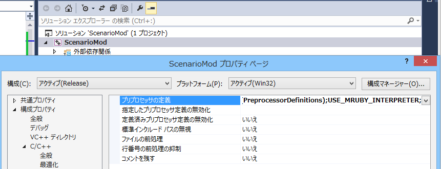
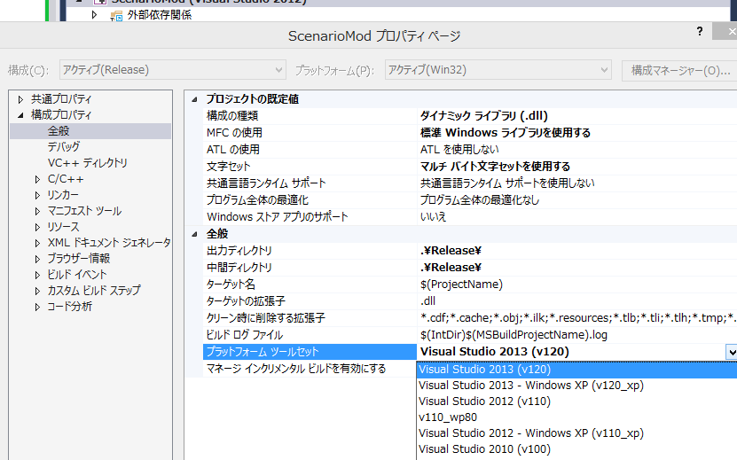
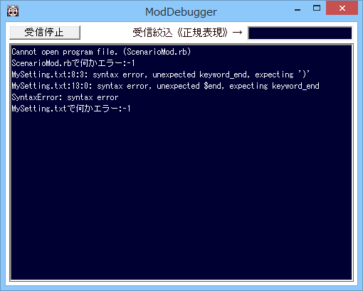

mrubyを使えるようにするための、ScenarioModの設定
〜必要環境〜
- ScenarioModでmrubyを利用するためには、VisualStudio 2012以上の環境が必要です。
ScenarioModの設定
- mrubyは、サイズが大きいため、自動ではScenarioModで使えるようになっていません。
以下のように設定を行ってください。
-
ScenarioModのプロジェクトを右クリックして「プロパティ」より「C++のプリプロセッサ」として、
「USE_MRUBY_INTERPRETER」を付け加える

-
同様に、「全般」のプラットフォームセットで、自分自身が使っているVisual Studio のバージョンのものを選ぶ。
自分自身がVisual Studio 2013 を今起動している、そのまま「Visual Studio 2013」を選ぶ。
自分自身がVisual Studio 2015 を今起動している、そのまま「Visual Studio 2015」を選ぶ。
このように、自分自身が利用しているバージョンと合わせます。

- printやエラーの類は、全て「ModDebugger」上に出ます。
